Case Study
Assessing
import numpy as np
import pandas as pd
import matplotlib.pyplot as plt
import seaborn as sns
%matplotlib inline
df_red = pd.read_csv('winequality-red.csv', sep=';')
# red_df.rename(columns={'total_sulfur-dioxide':'total_sulfur_dioxide'}, inplace=True)
df_red.shape
(1599, 12)
sum(df_red.duplicated())
240
df_red['quality'].unique()
array([5, 6, 7, 4, 8, 3], dtype=int64)
df_white = pd.read_csv('winequality-white.csv', sep=';')
df_white.shape
(4898, 12)
sum(df_white.duplicated())
937
df_white['quality'].unique()
array([6, 5, 7, 8, 4, 3, 9], dtype=int64)
How fast is NumPy?
a = np.random.random((int)(1e8))
import time
start = time.time()
sum(a) / len(a)
print(time.time() - start, 'seconds')
22.290226697921753 seconds
start = time.time()
np.mean(a)
print(time.time() - start, 'seconds')
0.16791772842407227 seconds
Steps to combine DataFrames
# create color array for red dataframe
color_red = np.repeat('red', 1599)
# create color array for white dataframe
color_white = np.repeat('white', 4898)
df_red['color'] = color_red
df_red.head()
| fixed acidity | volatile acidity | citric acid | residual sugar | chlorides | free sulfur dioxide | total sulfur dioxide | density | pH | sulphates | alcohol | quality | color | |
|---|---|---|---|---|---|---|---|---|---|---|---|---|---|
| 0 | 7.4 | 0.70 | 0.00 | 1.9 | 0.076 | 11.0 | 34.0 | 0.9978 | 3.51 | 0.56 | 9.4 | 5 | red |
| 1 | 7.8 | 0.88 | 0.00 | 2.6 | 0.098 | 25.0 | 67.0 | 0.9968 | 3.20 | 0.68 | 9.8 | 5 | red |
| 2 | 7.8 | 0.76 | 0.04 | 2.3 | 0.092 | 15.0 | 54.0 | 0.9970 | 3.26 | 0.65 | 9.8 | 5 | red |
| 3 | 11.2 | 0.28 | 0.56 | 1.9 | 0.075 | 17.0 | 60.0 | 0.9980 | 3.16 | 0.58 | 9.8 | 6 | red |
| 4 | 7.4 | 0.70 | 0.00 | 1.9 | 0.076 | 11.0 | 34.0 | 0.9978 | 3.51 | 0.56 | 9.4 | 5 | red |
df_white['color'] = color_white
df_white.head()
| fixed acidity | volatile acidity | citric acid | residual sugar | chlorides | free sulfur dioxide | total sulfur dioxide | density | pH | sulphates | alcohol | quality | color | |
|---|---|---|---|---|---|---|---|---|---|---|---|---|---|
| 0 | 7.0 | 0.27 | 0.36 | 20.7 | 0.045 | 45.0 | 170.0 | 1.0010 | 3.00 | 0.45 | 8.8 | 6 | white |
| 1 | 6.3 | 0.30 | 0.34 | 1.6 | 0.049 | 14.0 | 132.0 | 0.9940 | 3.30 | 0.49 | 9.5 | 6 | white |
| 2 | 8.1 | 0.28 | 0.40 | 6.9 | 0.050 | 30.0 | 97.0 | 0.9951 | 3.26 | 0.44 | 10.1 | 6 | white |
| 3 | 7.2 | 0.23 | 0.32 | 8.5 | 0.058 | 47.0 | 186.0 | 0.9956 | 3.19 | 0.40 | 9.9 | 6 | white |
| 4 | 7.2 | 0.23 | 0.32 | 8.5 | 0.058 | 47.0 | 186.0 | 0.9956 | 3.19 | 0.40 | 9.9 | 6 | white |
# append dataframes
wine_df = df_red.append(df_white, ignore_index= True, sort=False)
# view dataframe to check for success
wine_df.head()
| fixed acidity | volatile acidity | citric acid | residual sugar | chlorides | free sulfur dioxide | total sulfur dioxide | density | pH | sulphates | alcohol | quality | color | |
|---|---|---|---|---|---|---|---|---|---|---|---|---|---|
| 0 | 7.4 | 0.70 | 0.00 | 1.9 | 0.076 | 11.0 | 34.0 | 0.9978 | 3.51 | 0.56 | 9.4 | 5 | red |
| 1 | 7.8 | 0.88 | 0.00 | 2.6 | 0.098 | 25.0 | 67.0 | 0.9968 | 3.20 | 0.68 | 9.8 | 5 | red |
| 2 | 7.8 | 0.76 | 0.04 | 2.3 | 0.092 | 15.0 | 54.0 | 0.9970 | 3.26 | 0.65 | 9.8 | 5 | red |
| 3 | 11.2 | 0.28 | 0.56 | 1.9 | 0.075 | 17.0 | 60.0 | 0.9980 | 3.16 | 0.58 | 9.8 | 6 | red |
| 4 | 7.4 | 0.70 | 0.00 | 1.9 | 0.076 | 11.0 | 34.0 | 0.9978 | 3.51 | 0.56 | 9.4 | 5 | red |
wine_df.tail()
| fixed acidity | volatile acidity | citric acid | residual sugar | chlorides | free sulfur dioxide | total sulfur dioxide | density | pH | sulphates | alcohol | quality | color | |
|---|---|---|---|---|---|---|---|---|---|---|---|---|---|
| 6492 | 6.2 | 0.21 | 0.29 | 1.6 | 0.039 | 24.0 | 92.0 | 0.99114 | 3.27 | 0.50 | 11.2 | 6 | white |
| 6493 | 6.6 | 0.32 | 0.36 | 8.0 | 0.047 | 57.0 | 168.0 | 0.99490 | 3.15 | 0.46 | 9.6 | 5 | white |
| 6494 | 6.5 | 0.24 | 0.19 | 1.2 | 0.041 | 30.0 | 111.0 | 0.99254 | 2.99 | 0.46 | 9.4 | 6 | white |
| 6495 | 5.5 | 0.29 | 0.30 | 1.1 | 0.022 | 20.0 | 110.0 | 0.98869 | 3.34 | 0.38 | 12.8 | 7 | white |
| 6496 | 6.0 | 0.21 | 0.38 | 0.8 | 0.020 | 22.0 | 98.0 | 0.98941 | 3.26 | 0.32 | 11.8 | 6 | white |
Saving combined DataFrame
wine_df.to_csv('winequality_edited.csv', index=False)
wine_df.shape
(6497, 13)
wine_df['fixed acidity'].hist()
<matplotlib.axes._subplots.AxesSubplot at 0x190843edb70>

wine_df['total sulfur dioxide'].hist()
<matplotlib.axes._subplots.AxesSubplot at 0x190844e1898>
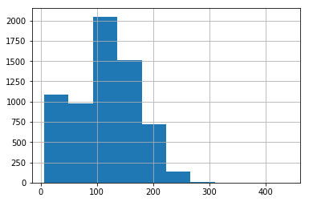
wine_df['pH'].hist()
<matplotlib.axes._subplots.AxesSubplot at 0x190845689e8>
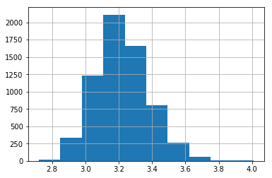
wine_df['alcohol'].hist()
<matplotlib.axes._subplots.AxesSubplot at 0x19084549400>
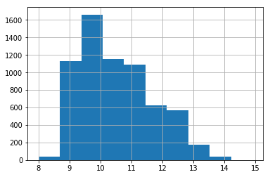
df.plot(x="volatile acidity", y="quality", kind="scatter");
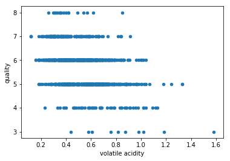
wine_df.plot(x='residual sugar', y='quality', kind='scatter');
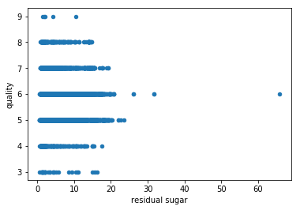
wine_df.plot(x='pH', y='quality', kind='scatter');
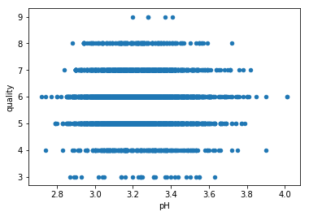
wine_df.plot(x='alcohol', y='quality', kind='scatter');
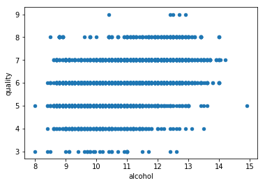
wine_df.mean()
fixed acidity 7.215307
volatile acidity 0.339666
citric acid 0.318633
residual sugar 5.443235
chlorides 0.056034
free sulfur dioxide 30.525319
total sulfur dioxide 115.744574
density 0.994697
pH 3.218501
sulphates 0.531268
alcohol 10.491801
quality 5.818378
dtype: float64
Drawing Conclusions Using Groupby
wine_df.groupby('quality').mean()
| fixed acidity | volatile acidity | citric acid | residual sugar | chlorides | free sulfur dioxide | total sulfur dioxide | density | pH | sulphates | alcohol | |
|---|---|---|---|---|---|---|---|---|---|---|---|
| quality | |||||||||||
| 3 | 7.853333 | 0.517000 | 0.281000 | 5.140000 | 0.077033 | 39.216667 | 122.033333 | 0.995744 | 3.257667 | 0.506333 | 10.215000 |
| 4 | 7.288889 | 0.457963 | 0.272315 | 4.153704 | 0.060056 | 20.636574 | 103.432870 | 0.994833 | 3.231620 | 0.505648 | 10.180093 |
| 5 | 7.326801 | 0.389614 | 0.307722 | 5.804116 | 0.064666 | 30.237371 | 120.839102 | 0.995849 | 3.212189 | 0.526403 | 9.837783 |
| 6 | 7.177257 | 0.313863 | 0.323583 | 5.549753 | 0.054157 | 31.165021 | 115.410790 | 0.994558 | 3.217726 | 0.532549 | 10.587553 |
| 7 | 7.128962 | 0.288800 | 0.334764 | 4.731696 | 0.045272 | 30.422150 | 108.498610 | 0.993126 | 3.228072 | 0.547025 | 11.386006 |
| 8 | 6.835233 | 0.291010 | 0.332539 | 5.382902 | 0.041124 | 34.533679 | 117.518135 | 0.992514 | 3.223212 | 0.512487 | 11.678756 |
| 9 | 7.420000 | 0.298000 | 0.386000 | 4.120000 | 0.027400 | 33.400000 | 116.000000 | 0.991460 | 3.308000 | 0.466000 | 12.180000 |
wine_df.groupby(['quality', 'color']).mean()
| fixed acidity | volatile acidity | citric acid | residual sugar | chlorides | free sulfur dioxide | total sulfur dioxide | density | pH | sulphates | alcohol | ||
|---|---|---|---|---|---|---|---|---|---|---|---|---|
| quality | color | |||||||||||
| 3 | red | 8.360000 | 0.884500 | 0.171000 | 2.635000 | 0.122500 | 11.000000 | 24.900000 | 0.997464 | 3.398000 | 0.570000 | 9.955000 |
| white | 7.600000 | 0.333250 | 0.336000 | 6.392500 | 0.054300 | 53.325000 | 170.600000 | 0.994884 | 3.187500 | 0.474500 | 10.345000 | |
| 4 | red | 7.779245 | 0.693962 | 0.174151 | 2.694340 | 0.090679 | 12.264151 | 36.245283 | 0.996542 | 3.381509 | 0.596415 | 10.265094 |
| white | 7.129448 | 0.381227 | 0.304233 | 4.628221 | 0.050098 | 23.358896 | 125.279141 | 0.994277 | 3.182883 | 0.476135 | 10.152454 | |
| 5 | red | 8.167254 | 0.577041 | 0.243686 | 2.528855 | 0.092736 | 16.983847 | 56.513950 | 0.997104 | 3.304949 | 0.620969 | 9.899706 |
| white | 6.933974 | 0.302011 | 0.337653 | 7.334969 | 0.051546 | 36.432052 | 150.904598 | 0.995263 | 3.168833 | 0.482203 | 9.808840 | |
| 6 | red | 8.347179 | 0.497484 | 0.273824 | 2.477194 | 0.084956 | 15.711599 | 40.869906 | 0.996615 | 3.318072 | 0.675329 | 10.629519 |
| white | 6.837671 | 0.260564 | 0.338025 | 6.441606 | 0.045217 | 35.650591 | 137.047316 | 0.993961 | 3.188599 | 0.491106 | 10.575372 | |
| 7 | red | 8.872362 | 0.403920 | 0.375176 | 2.720603 | 0.076588 | 14.045226 | 35.020101 | 0.996104 | 3.290754 | 0.741256 | 11.465913 |
| white | 6.734716 | 0.262767 | 0.325625 | 5.186477 | 0.038191 | 34.125568 | 125.114773 | 0.992452 | 3.213898 | 0.503102 | 11.367936 | |
| 8 | red | 8.566667 | 0.423333 | 0.391111 | 2.577778 | 0.068444 | 13.277778 | 33.444444 | 0.995212 | 3.267222 | 0.767778 | 12.094444 |
| white | 6.657143 | 0.277400 | 0.326514 | 5.671429 | 0.038314 | 36.720000 | 126.165714 | 0.992236 | 3.218686 | 0.486229 | 11.636000 | |
| 9 | white | 7.420000 | 0.298000 | 0.386000 | 4.120000 | 0.027400 | 33.400000 | 116.000000 | 0.991460 | 3.308000 | 0.466000 | 12.180000 |
# if only interested in fixed pH
wine_df.groupby(['quality', 'color'], as_index=False)['pH'].mean()
| quality | color | pH | |
|---|---|---|---|
| 0 | 3 | red | 3.398000 |
| 1 | 3 | white | 3.187500 |
| 2 | 4 | red | 3.381509 |
| 3 | 4 | white | 3.182883 |
| 4 | 5 | red | 3.304949 |
| 5 | 5 | white | 3.168833 |
| 6 | 6 | red | 3.318072 |
| 7 | 6 | white | 3.188599 |
| 8 | 7 | red | 3.290754 |
| 9 | 7 | white | 3.213898 |
| 10 | 8 | red | 3.267222 |
| 11 | 8 | white | 3.218686 |
| 12 | 9 | white | 3.308000 |
Is a certain type of wine associated with higher quality?
wine_df[wine_df['color'] == 'red']['quality'].mean()
5.6360225140712945
wine_df[wine_df['color'] == 'white']['quality'].mean()
5.87790935075541
# Find the mean quality of each wine type (red and white) with groupby
wine_df.groupby(['color'], as_index=False)['quality'].mean()
| color | quality | |
|---|---|---|
| 0 | red | 5.636023 |
| 1 | white | 5.877909 |
What level of acidity receives the highest average rating?
wine_df.describe().pH
count 6497.000000
mean 3.218501
std 0.160787
min 2.720000
25% 3.110000
50% 3.210000
75% 3.320000
max 4.010000
Name: pH, dtype: float64
# Bin edges that will be used to "cut" the data into groups
bin_edges = [2.72, 3.11, 3.21, 3.32, 4.01] # Fill in this list with five values you just found
# Labels for the four acidity level groups
bin_names = ['Low', 'Medium', 'Moderately High', 'High'] # Name each acidity level category
# Creates acidity_levels column
wine_df['acidity levels'] = pd.cut(df['pH'], bin_edges, labels=bin_names)
# Checks for successful creation of this column
wine_df.head()
| fixed acidity | volatile acidity | citric acid | residual sugar | chlorides | free sulfur dioxide | total sulfur dioxide | density | pH | sulphates | alcohol | quality | color | acidity levels | |
|---|---|---|---|---|---|---|---|---|---|---|---|---|---|---|
| 0 | 7.4 | 0.70 | 0.00 | 1.9 | 0.076 | 11.0 | 34.0 | 0.9978 | 3.51 | 0.56 | 9.4 | 5 | red | High |
| 1 | 7.8 | 0.88 | 0.00 | 2.6 | 0.098 | 25.0 | 67.0 | 0.9968 | 3.20 | 0.68 | 9.8 | 5 | red | Medium |
| 2 | 7.8 | 0.76 | 0.04 | 2.3 | 0.092 | 15.0 | 54.0 | 0.9970 | 3.26 | 0.65 | 9.8 | 5 | red | Moderately High |
| 3 | 11.2 | 0.28 | 0.56 | 1.9 | 0.075 | 17.0 | 60.0 | 0.9980 | 3.16 | 0.58 | 9.8 | 6 | red | Medium |
| 4 | 7.4 | 0.70 | 0.00 | 1.9 | 0.076 | 11.0 | 34.0 | 0.9978 | 3.51 | 0.56 | 9.4 | 5 | red | High |
# Find the mean quality of each acidity level with groupby
wine_df.groupby(['acidity levels'], as_index=False)['quality'].mean()
| acidity levels | quality | |
|---|---|---|
| 0 | Low | 5.692308 |
| 1 | Medium | 5.676157 |
| 2 | Moderately High | 5.670429 |
| 3 | High | 5.588798 |
wine_df.groupby('acidity levels').mean().quality
acidity levels
Low 5.692308
Medium 5.676157
Moderately High 5.670429
High 5.588798
Name: quality, dtype: float64
# Use groupby to get the mean quality for each acidity level
acidity_level_quality_means = wine_df.groupby('acidity levels').quality.mean()
acidity_level_quality_means
acidity levels
Low 5.692308
Medium 5.676157
Moderately High 5.670429
High 5.588798
Name: quality, dtype: float64
# Create a bar chart with proper labels
locations = [1, 2, 3, 4] # reorder values above to go from low to high
heights = acidity_level_quality_means
labels = ['Low', 'Medium', 'Moderately High', 'High']
# labels = acidity_level_quality_means.index.str.replace('_', ' ').str.title() # alternative to commented out line above
plt.bar(locations, heights, tick_label=labels)
plt.title('Average Quality Ratings by Acidity Level')
plt.xlabel('Acidity Level')
plt.ylabel('Average Quality Rating');
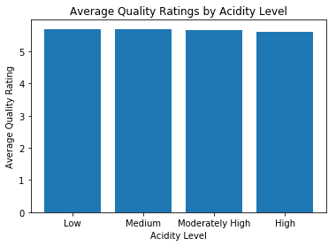
plt.plot(locations, heights)
plt.title('Average Quality Ratings by Acidity Level')
plt.xlabel('Acidity Level')
plt.ylabel('Average Quality Rating');
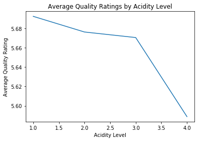
# Save changes for the next section
wine_df.to_csv('winequality_edited.csv', index=False)
Do wines with higher alcoholic content receive better ratings?
# get the median amount of alcohol content
wine_df['alcohol'].median()
10.3
# select samples with alcohol content less than the median
low_alcohol = wine_df.query('alcohol < 10.30')
# select samples with alcohol content greater than or equal to the median
high_alcohol = wine_df.query('alcohol >= 10.30')
# ensure these queries included each sample exactly once
num_samples = wine_df.shape[0]
num_samples == low_alcohol['quality'].count() + high_alcohol['quality'].count() # should be True
True
# get mean quality rating for the low alcohol and high alcohol groups
low_alcohol.quality.mean(), high_alcohol.quality.mean()
(5.475920679886686, 6.146084337349397)
mean_quality_low = low_alcohol['quality'].mean()
mean_quality_high = high_alcohol['quality'].mean()
# Create a bar chart with proper labels
locations = [1, 2]
heights = [mean_quality_low, mean_quality_high]
labels = ['Low', 'High']
plt.bar(locations, heights, tick_label=labels)
plt.title('Average Quality Ratings by Alcohol Content')
plt.xlabel('Alcohol Content')
plt.ylabel('Average Quality Rating');
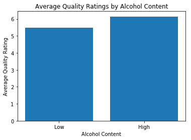
Do sweeter wines receive better ratings?¶
# get the median amount of residual sugar
wine_df['residual sugar'].median()
3.0
# select samples with residual sugar less than the median
low_sugar = wine_df[wine_df['residual sugar'] < 3]
# select samples with residual sugar greater than or equal to the median
high_sugar = wine_df[wine_df['residual sugar'] >= 3]
# ensure these queries included each sample exactly once
num_samples == low_sugar['quality'].count() + high_sugar['quality'].count() # should be True
True
# get mean quality rating for the low sugar and high sugar groups
low_sugar.quality.mean(), high_sugar.quality.mean()
(5.808800743724822, 5.82782874617737)
mean_quality_low = low_sugar['quality'].mean()
mean_quality_high = high_sugar['quality'].mean()
# Create a bar chart with proper labels
locations = [1, 2]
heights = [mean_quality_low, mean_quality_high]
labels = ['Low', 'High']
plt.bar(locations, heights, tick_label=labels)
plt.title('Average Quality Ratings by Residual Sugar')
plt.xlabel('Residual Sugar')
plt.ylabel('Average Quality Rating');
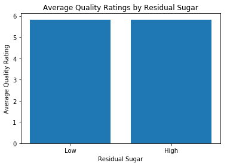
colors = ['red', 'grey']
color_means = wine_df.groupby('color')['quality'].mean()
color_means.plot(kind='bar', title='Average wine quality by color', color = colors, alpha=0.7)
plt.xlabel('Colors', fontsize = 18)
plt.ylabel('Quality', fontsize = 18)
Text(0, 0.5, 'Quality')
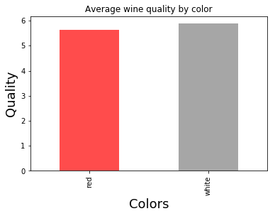
counts = wine_df.groupby(['quality', 'color']).count()
counts
| fixed acidity | volatile acidity | citric acid | residual sugar | chlorides | free sulfur dioxide | total sulfur dioxide | density | pH | sulphates | alcohol | acidity levels | ||
|---|---|---|---|---|---|---|---|---|---|---|---|---|---|
| quality | color | ||||||||||||
| 3 | red | 10 | 10 | 10 | 10 | 10 | 10 | 10 | 10 | 10 | 10 | 10 | 10 |
| white | 20 | 20 | 20 | 20 | 20 | 20 | 20 | 20 | 20 | 20 | 20 | 0 | |
| 4 | red | 53 | 53 | 53 | 53 | 53 | 53 | 53 | 53 | 53 | 53 | 53 | 53 |
| white | 163 | 163 | 163 | 163 | 163 | 163 | 163 | 163 | 163 | 163 | 163 | 0 | |
| 5 | red | 681 | 681 | 681 | 681 | 681 | 681 | 681 | 681 | 681 | 681 | 681 | 681 |
| white | 1457 | 1457 | 1457 | 1457 | 1457 | 1457 | 1457 | 1457 | 1457 | 1457 | 1457 | 0 | |
| 6 | red | 638 | 638 | 638 | 638 | 638 | 638 | 638 | 638 | 638 | 638 | 638 | 638 |
| white | 2198 | 2198 | 2198 | 2198 | 2198 | 2198 | 2198 | 2198 | 2198 | 2198 | 2198 | 0 | |
| 7 | red | 199 | 199 | 199 | 199 | 199 | 199 | 199 | 199 | 199 | 199 | 199 | 199 |
| white | 880 | 880 | 880 | 880 | 880 | 880 | 880 | 880 | 880 | 880 | 880 | 0 | |
| 8 | red | 18 | 18 | 18 | 18 | 18 | 18 | 18 | 18 | 18 | 18 | 18 | 18 |
| white | 175 | 175 | 175 | 175 | 175 | 175 | 175 | 175 | 175 | 175 | 175 | 0 | |
| 9 | white | 5 | 5 | 5 | 5 | 5 | 5 | 5 | 5 | 5 | 5 | 5 | 0 |
counts = wine_df.groupby(['quality', 'color']).count()['pH']
counts.plot(kind='bar', title='Counts by Wine Color and Quantity', color = colors, alpha=0.7)
plt.xlabel('Quality and Color', fontsize = 18)
plt.ylabel('Count', fontsize = 18)
Text(0, 0.5, 'Count')
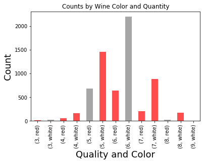
totals = wine_df.groupby(['quality', 'color']).count()['pH']
proportions = counts / totals
proportions.plot(kind='bar', title='Proportions by Wine Color and Quantity', color = colors, alpha=.7)
plt.xlabel('Quality and Color', fontsize = 18)
plt.ylabel('Proportion', fontsize = 18)
Text(0, 0.5, 'Proportion')
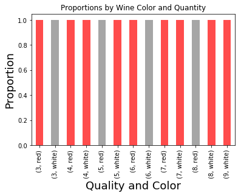